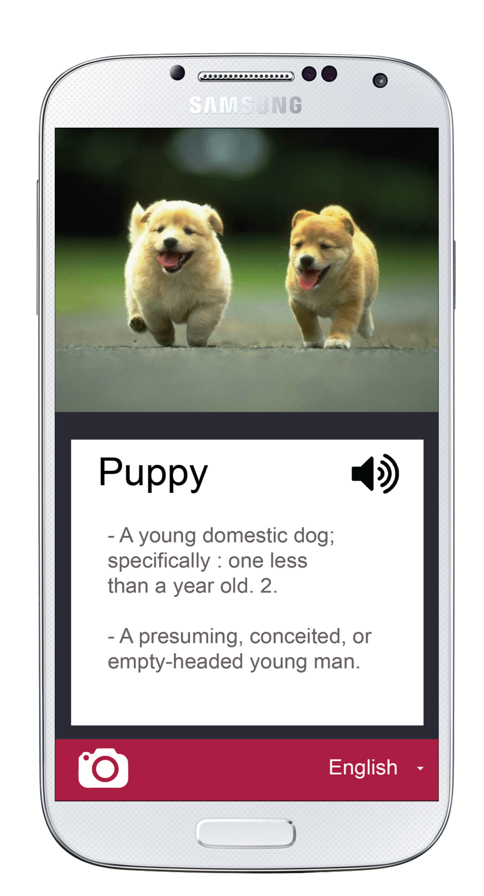

Take a picture

/pik-toh/
- A representation through the art of painting, drawing, or photograph
- Writing with pictures or symbols
- Picture writing. A picture representing a word, phrase, or idea, especially one used in early writing systems.
/pik-toh/
- A representation through the art of painting, drawing, or photograph
- Writing with pictures or symbols
- Picture writing. A picture representing a word, phrase, or idea, especially one used in early writing systems.